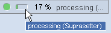

All existing job statuses will now be described in this section. A progress indicator for the job status is displayed for all processes. Some symbols are shown here as an example. Self-explanatory statuses are not explained:
A progress bar in the job list and in the status area below the job list shows at what stage processing is.
A tooltip appears showing you the processing status when you let the mouse pointer rest briefly over the progress bar in the job list.

Copyright © 2013 Heidelberger Druckmaschinen AG